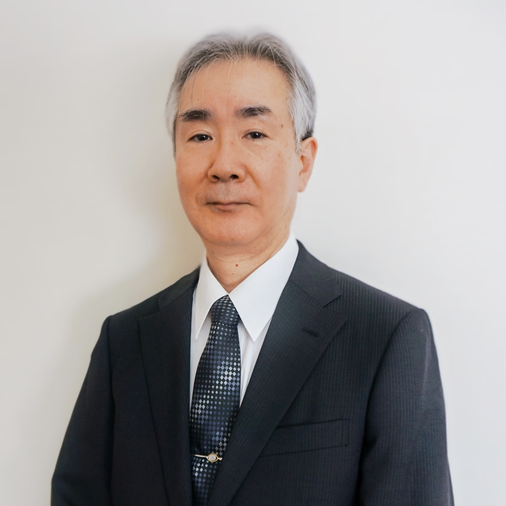

校長挨拶・教育理念
本高専は、昭和36年高等専門学校制度創立の翌年昭和37年4月に、学校法人近畿大学の併設校、熊野市に熊野高等専門学校として開校しました。その後、平成23年4月に名張市に移転、令和3年には名張市移転10周年、また令和4年には創立60周年を迎えます。歴代校長による学校改革により「教育の高度化」と「地域との連携」が推し進められ、「個性を尊重したきめ細かい教育」と「抜群の就職・進学実績」を誇ります。このような伝統と実績のある近大高専をこれからもますます発展させるため、誇りをもって精進してまいります。
高専は、中学校卒業から、本科では5年間、さらに2年間の専攻科を含む7年間の集中・一貫した技術者教育を行う高等教育機関であり、本科卒業生には「準学士」、専攻科修了生で大学評価・学位授与機構の基準を満たす学生には大学卒業生と同じ「学士」の称号が授与されます。近畿大学学園の建学の精神である「実学教育」と「人格の陶冶」を実現するためにまさしく適した教育機関であると思います。
本校の教育方針として、幅広く学生を受け入れ、個性を伸ばし、実学をもって社会に貢献する人材の育成を掲げます。本科は専門コース(機械システム、電気電子、制御情報、都市環境)を含む総合システム工学科として1学科4コース制をとります。広く工学に興味をもって入学した皆さんは1、2年次には共通教育科目と実験を含む工学全般の基礎を学び、余裕をもって専門分野を選択することが可能です。また、数学・英語は習熟度別クラス制をとり個人の進み方に合わせたきめ細かな指導を行ってゆきます。これからのICT時代に向けた取り組みや、英チェシャーカレッジとの国際交流などのグローバル化にも力を注いでいます。
専門コースでは産業界や研究の第一線に従事してきた教員が教鞭をとり実践的な技術を身につけます。高専の技術教育は産業界でも高く評価されており、本校も違わず就職率は毎年ほぼ100%の実績を誇ります。就職だけではなく、さらに高度な技術を目指す進学希望の学生には、特進コースに始まる進学指導も充実しており、国公立大学、近畿大学を含む私立大学への編入学者や大学院への入学者も多数輩出しております。
それだけではありません。本校には4つの強化クラブ(野球、陸上、ソフトテニス、サッカー)を含めた体育系のクラブ、ロボコン、プロコン、デザコン、プレコンや吹奏楽、ボランティアなどの文科系など様々な学生の才能を伸ばす課外活動があり、実績と経験を持つ教員の指導により各所で成果をあげています。
こうした進路実績や教育環境は地域のご協力なしには実現できません。市民公開講座の開講、共同研究の実施、資格取得支援講座やプログラミング・サイエンススクール、各種地域イベントへの学生の参加など、本校のもつ様々な資産を活用し、地域に根ざし発展してゆく高等教育研究機関を目指します。
これからも近大高専へのご支援をよろしくお願い申し上げます。